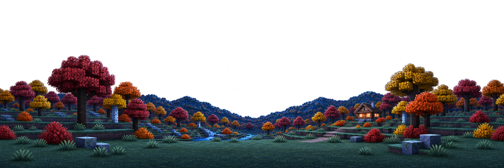
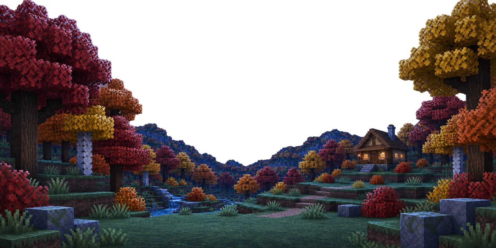

Living Overworld — autumn night landscape proof
Isolated proof only · no runtime integration · transparent sky retained · approved geography preserved
Desktop banner

390px mobile banner

ProofNot integrated
The landscape is authored for night rather than darkened uniformly. The retreat, foreground, central valley, and skyline positions remain aligned with the accepted autumn composition. Stars shown here are only a backdrop reference; the production star layer remains independent.
Transparency and edge inspection
The checkerboard exposes the reconstructed skyline without a baked sky, celestial body, cloud, fog, or precipitation layer.